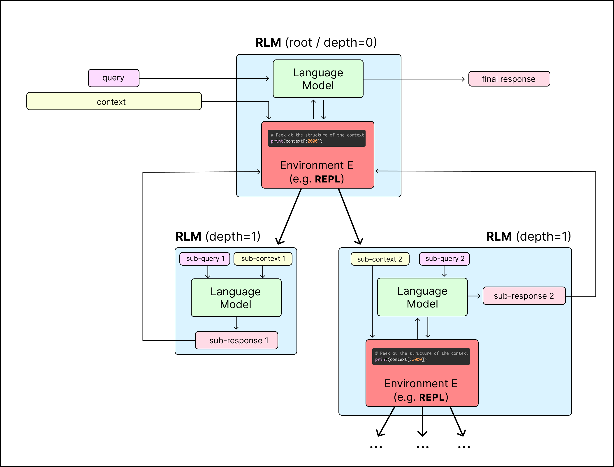

Recursive Language Models: A Simple Review
Have you ever noticed that when you chat with an AI for a long time or give it a massive amount of text, it starts to "forget" details or make silly mistakes? This is a known issue called Context Rot. As the input (context) grows, the AI's accuracy drops, even if it hasn't hit its official memory limit.
The Problem: Context Rot
Traditional Large Language Models (LLMs) try to stuff all information into a single context window. When faced with millions of words, they become overwhelmed. Recursive Language Models (RLMs) offer a smart solution: instead of reading everything at once, they use a small program to explore and chunk the data recursively.

How RLMs Work
An RLM is like an AI wrapped in a programming environment (usually a Python REPL). It doesn't look at all your data directly. Instead, the data is loaded as a variable in Python. The "Root AI" writes small scripts to search, filter, and summarize the data before giving you an answer.
Here is a simple example of how you might interact with an RLM in your code:
# Traditional LLM Call (Context Rot Risk)
response = gpt5.completion(massive_context_and_query)
# Recursive LM Call (Safe for massive contexts)
# The RLM handles the context via a REPL environment automatically
response = rlm.completion(massive_context_and_query)
Performance and Benefits
RLMs are extremely efficient for massive tasks. When tested on very long contexts (like the OOLONG benchmark), an RLM using a smaller model can actually outperform a giant model trying to read everything at once.
| Model Strategy | Context Handling | Performance (132k+ tokens) |
|---|---|---|
| Standard GPT-5 | Reads all tokens at once | Struggles with Context Rot |
| RLM (GPT-5-mini) | Uses REPL & Sub-calls | +114% Improvement over GPT-5 |
- Unbounded Context: Can process over 10 million tokens without crashing.
- Deterministic Accuracy: Uses exact code (like regular expressions) to search data before reading it.
- Cost Efficient: Can use smaller, cheaper models for the heavy lifting sub-tasks.
Limitations
While powerful, RLMs are not perfect yet. Because they run multiple steps and wait for sub-AIs to finish, they are slower than getting a single direct answer. Also, the Root AI managing everything needs to be very smart (a "frontier" model) to write good code and manage the environment.